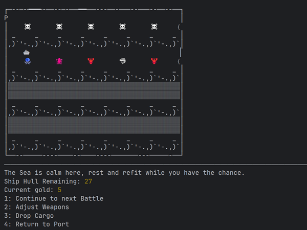
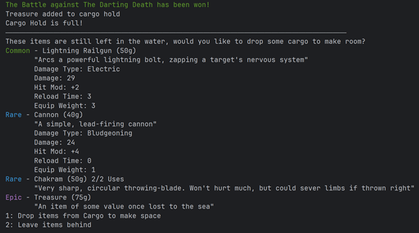
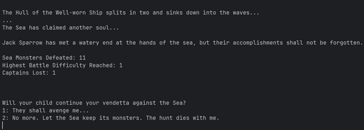
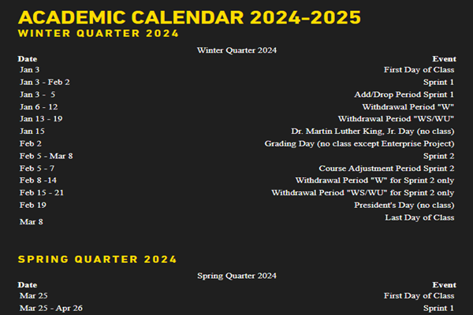
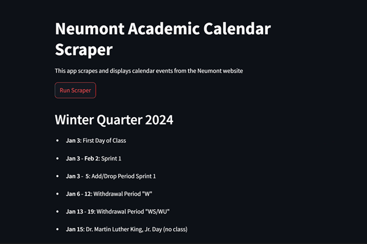
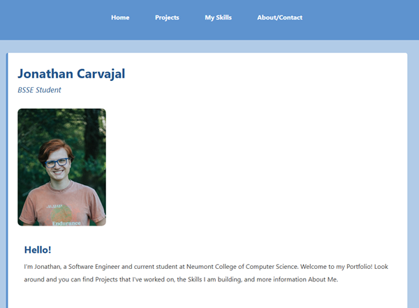

My Projects
The Monstrous Sea
Hunt Sea Monsters Across the Ocean
With an endless map of Monsters to fight in turn-based battles, push your luck and strategic skills as far as you dare before returning to port. Built single-handedly in Java with a focus on Object-Oriented Programming, this application went above and beyond the project requirements. The Monstrous Sea spans over 50 Classes and 4,000 lines of code, with modularity and reusability in mind.
Loot Treasures, Items, and Weapons
With limited space, you must prioritize the best items to carry on your ship. Using Polymorphism and Inheritance, the game manages and sorts loot items and the cargo hold. Thorough testing and creative solutions prevent bugs with item duplication or incorrect storage, ensuring a seamless player experience.
Leave A Legacy
A Captain may go down with his ship, but there are always more Captains, and more ships... Data is stored between runs, allowing for easy tracking of player stats. Versatile Functions and Classes allow for reusability and efficiency across multiple runs
Skills Used: Java, UML, Object-Oriented Programming & Design, Code Testing & Debugging
Neumont Calendar Scraper
HTML Webscraping
Built in Python, the Calendar Scraper fetches data from the Neumont website using the Requests library. Parsing the HTML using BeautifulSoup, the program filters out only the necessary information from the Academic Calendar.
Rebuilding Data into UI
Using the StreamLit library for UI, the program combines the filtered data into a simple and easy-to-read page with just the bare Academic Calendar information. I also utilized logging as the application runs, to help with quick iteration and maintaining clean bug-free code
Skills Used: Python, HTML, Requests, BeautifulSoup, StreamLit, Error Handling & Logging
This Portfolio Website!
Built by hand (or keyboard, rather) in HTML, CSS, and JavaScript, this website is comprised of several different pages, scripts, and styles. Built to show off my Portfolio and demonstrate my skills as a developer, this was an enjoyable project. I hope you've found it interesting and that you continue to enjoy your time here!
